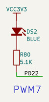
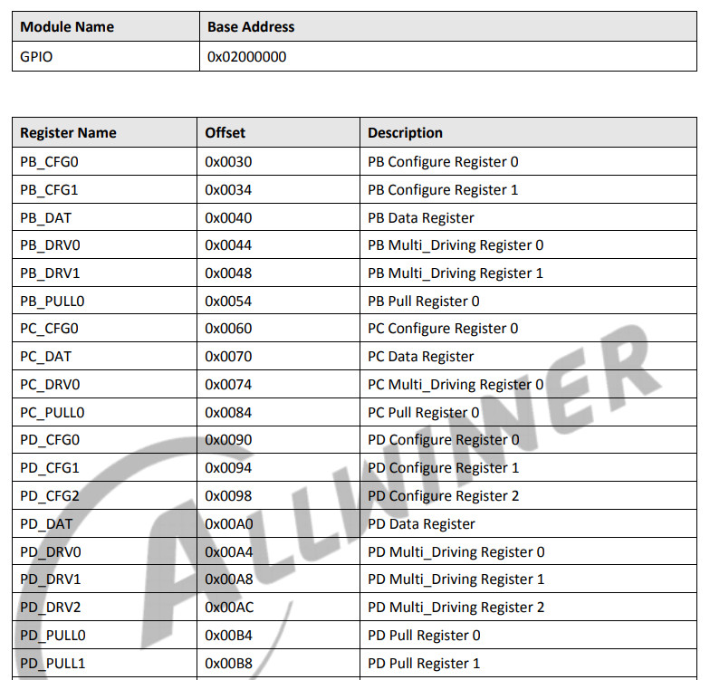
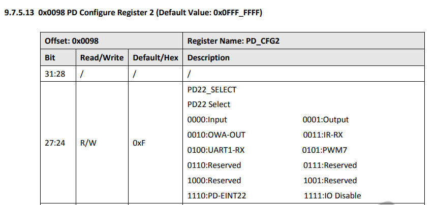
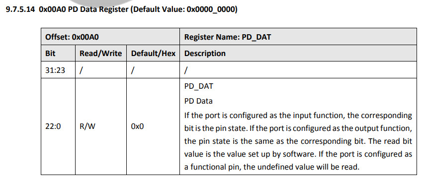
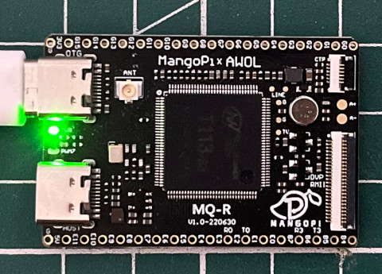
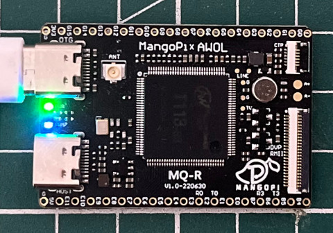

LED連接到PD22(PWM7)腳位




.global _start
.equ GPIO_BASE, 0x02000000
.equ PD_CFG2, (GPIO_BASE + 0x98)
.equ PD_DAT, (GPIO_BASE + 0xa0)
.arm
.text
_start:
.long 0xea000016
.byte 'e', 'G', 'O', 'N', '.', 'B', 'T', '0'
.long 0, __spl_size
.byte 'S', 'P', 'L', 2
.long 0, 0
.long 0, 0, 0, 0, 0, 0, 0, 0
.long 0, 0, 0, 0, 0, 0, 0, 0
_vector:
b reset
b .
b .
b .
b .
b .
b .
b .
reset:
ldr r0, =PD_CFG2
ldr r1, =0x01000000
str r1, [r0]
ldr r0, =PD_DAT
ldr r1, =(1 << 22)
0:
eor r2, r1
str r2, [r0]
ldr r3, =50000000
1:
subs r3, #1
bne 1b
b 0b
.end
main.ld
MEMORY {
RAM : ORIGIN = 0, LENGTH = 32K
}
SECTIONS {
text : {
PROVIDE(__spl_start = .);
*(.text*)
PROVIDE(__spl_end = .);
} > RAM
PROVIDE(__spl_size = __spl_end - __spl_start);
}
Makefile
all: arm-linux-gnueabihf-as -mcpu=cortex-a7 -o main.o main.s arm-linux-gnueabihf-ld -T main.ld -o main.elf main.o arm-linux-gnueabihf-objcopy -O binary main.elf main.bin gcc mksunxi.c -o mksunxi ./mksunxi main.bin run: sudo xfel ddr t113-s3; sudo xfel write 0x40000000 main.bin; sudo xfel exec 0x40000000 clean: rm -rf main.bin main.o main.elf
連接芒果派MQ-R到PC(沒有焊接SPI Flash)後，執行如下步驟：
$ lsusb
Bus 003 Device 021: ID 1f3a:efe8 Onda (unverified) V972 tablet in flashing mode
$ make
arm-linux-gnueabihf-as -mcpu=cortex-a7 -o main.o main.s
arm-linux-gnueabihf-ld -T main.ld -o main.elf main.o
arm-linux-gnueabihf-objcopy -O binary main.elf main.bin
gcc mksunxi.c -o mksunxi
./mksunxi main.bin
The bootloader head has been fixed, spl size is 512 bytes.
$ make run
sudo xfel ddr t113-s3; sudo xfel write 0x40000000 main.bin; sudo xfel exec 0x40000000
Initial ddr controller succeeded
100% [================================================] 512.000 B, 337.380 KB/s
完成

